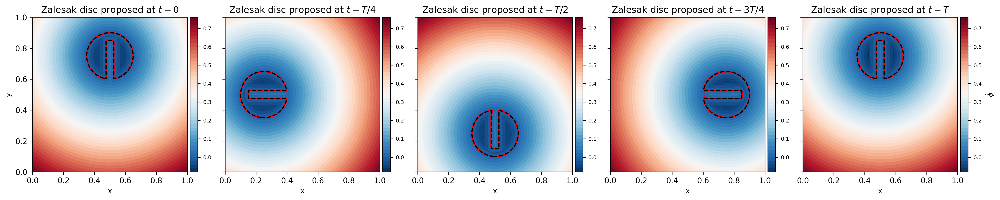
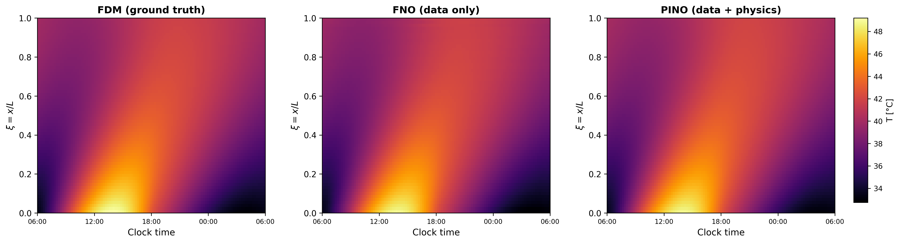
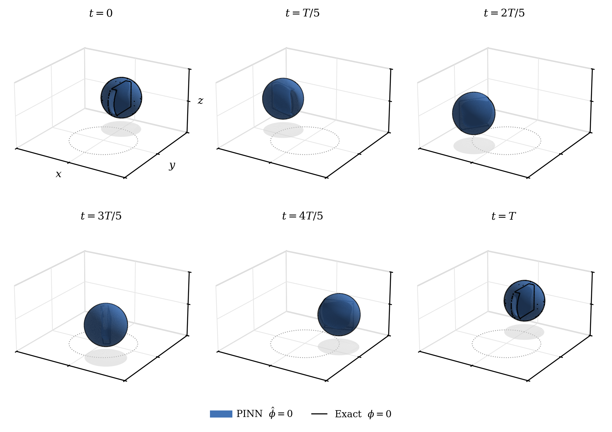
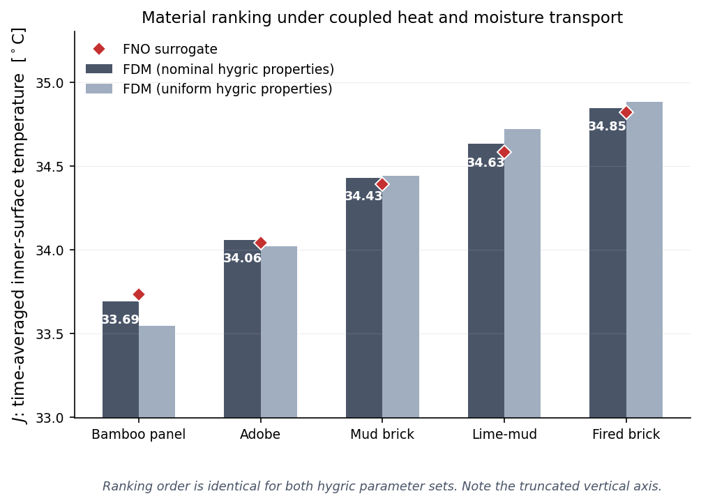
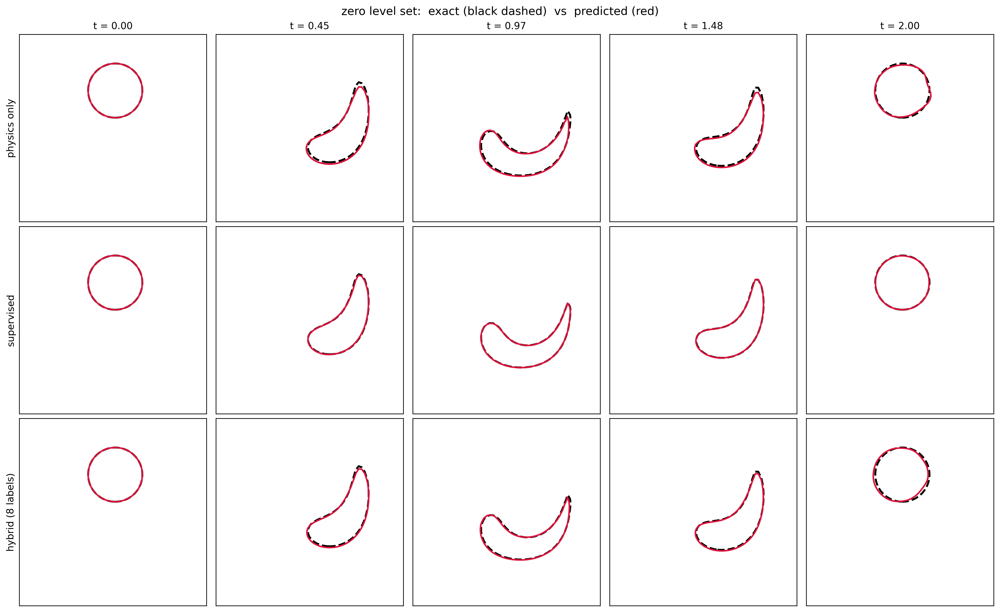

MS Applied Mathematics researcher and Research Assistant at
NED University of Engineering & Technology, Karachi,
supervised by Dr. Fahim Raees. I develop physics-informed neural networks and neural operators for partial
differential equations, with applications to interface tracking in computational fluid dynamics and heat transfer
in building materials.
Seeking fully funded PhD positions for Spring 2027
Dec 2026MS thesis defence scheduled at NED University.
Sep 2026New preprint: a data-free physics-informed neural operator for level-set interface advection (arXiv:2609.38195).
Sep 2026FNO surrogate for hygrothermal ranking of wall materials, with Fahim Raees, submitted to Machine Learning: Science and Technology (preprint).
Aug 2026SDF-Aware Weighting for 3D level-set PINNs submitted to Machine Learning: Science and Technology (arXiv:2608.08322).
Jul 2026Our PINN level-set paper is published, open access, in Machine Learning: Science and Technology (doi:10.1088/2632-2153/ae8b74).
Jul 2026PINO thermal ranking paper submitted to Scientific Reports (arXiv:2607.25668).
Mar 2026Joined Sindh Research Project 321 as a Research Assistant, and released the pinn-level-set code.
Research
I work on making physics-informed machine learning reliable enough to trust on PDE problems. My work follows
three threads: understanding why PINN training fails on interface problems and fixing it through architecture
and loss balancing; learning solution operators from the governing equations alone, without reference solutions;
and testing whether neural surrogates reproduce the engineering decisions a verified solver would make.
The applications are level-set interface advection, a core problem in multiphase CFD, and heat and moisture
transport through building walls in hot-dry climates.
Training PINNs for moving interfaces
A systematic study of PINN design choices for level-set advection, and SDF-Aware Weighting, an adaptive
eikonal weight that replaces a manual sweep over four orders of magnitude in 3D.
A spacetime Fourier neural operator trained only on the transport residual and an eikonal constraint,
mapping an initial interface to its full trajectory with no reference solutions.
Neural-operator surrogates for ranking indigenous wall materials by thermal and hygrothermal performance,
checked against verified finite-difference and finite-volume solvers.
A Systematic Study of Physics-Informed Neural Networks for the Level-Set Interface Advection
Muhammad Akbar Khan and Fahim Raees
Machine Learning: Science and Technology (IOP Publishing), 2026. Open access, CC BY 4.0
A 69-experiment ablation of PINNs for the level-set advection equation on four benchmarks: linear translation,
solid-body rotation, reversed vortex deformation and Zalesak's slotted disc. Eikonal weight tuning reduces error
by up to 82×, and the study identifies a joint design constraint between random Fourier feature embeddings
and the eikonal weight. A standard tanh network reaches 0.63% relative error on the reversed vortex (T = 8)
and 0.13% on Zalesak's disc, lower than reported for PirateNet (Mullins et al., 2025).

Zalesak's slotted disc over one full rotation: PINN level-set field with predicted (red) and exact (dashed) interfaces.
A Physics-Informed Neural Operator for Thermal Ranking of Low-Cost Wall Materials in Hot-Dry Climates
Muhammad Akbar Khan, Fahim Raees and Ubaida Fatima
Scientific Reports (Springer Nature), submitted July 2026
A two-stage framework: a Crank–Nicolson finite-difference solver under diurnal solar forcing, and a PINO/FNO
surrogate for parametric thermal analysis of five indigenous Sindh wall materials over a nine-dimensional parameter
space (1500 Latin hypercube samples). The PINO reaches 0.201 K mean absolute error on peak inner-surface
temperature and preserves the solver's material ranking exactly. Trained on 150 samples it matches a data-only FNO
trained on 300, and it reproduces the ISO 13786 time lag and decrement factor to within 0.99 h and 0.010.

Temperature through the wall over a diurnal cycle: finite-difference ground truth, data-only FNO and PINO.
Machine Learning: Science and Technology (IOP Publishing), submitted August 2026
Standard gradient-norm loss balancing fails for eikonal regularisation: the correct level-set solution has a nonzero
eikonal residual wherever it departs from a signed-distance function, so driving that residual to zero corrupts the
solution. SDF-Aware Weighting (SAW) combines a residual-quantile gate with a gradient-norm ratio, excluding points
with legitimate departure before scaling the term. On four 3D benchmarks a single SAW configuration picks an eikonal
weight within an order of magnitude of the best in an 18-run sweep spanning 10−1 to
10−5, and on the Zalesak slotted sphere it beats every weight in that sweep. The paper also
introduces feature-restricted metrics (Ffill, Ferode) that measure thin-feature preservation
separately from global error.

Zalesak slotted sphere with SAW: PINN zero level set (blue) versus exact interface (black) over one period.
A Fourier Neural Operator Surrogate for Hygrothermal Ranking of Indigenous Wall Materials in Hot-Dry Climates
Fahim Raees and Muhammad Akbar Khan
Machine Learning: Science and Technology (IOP Publishing), submitted September 2026
Tests whether a neural operator reproduces the decision a solver would make, using coupled heat and moisture
transport through five indigenous earthen wall materials over a 30-day hot-dry summer. A verified finite-volume
solver generates 2000 solutions over a 13-dimensional parameter space, and the FNO predicts temperature and moisture
fields to relative L2 errors of 8.7×10−4 and 8.1×10−3.
For the scalar ranking quantity a Gaussian process is five times more accurate, yet both surrogates reproduce every
solver ranking. Hygric parameters have negligible influence, so the ranking is governed by thermal properties.

Material ranking under coupled heat and moisture transport: finite-volume solver (bars) versus FNO surrogate (diamonds).
A Data-Free Physics-Informed Neural Operator for Level-Set Interface Advection
Muhammad Akbar Khan
arXiv preprint, 2026
A spacetime Fourier neural operator that maps an initial interface to the full level-set trajectory, trained only on
the transport residual and an eikonal constraint, with the initial condition imposed by construction and no reference
solutions at any point. On a reversed single vortex it reaches 1.61% relative L2 error, against 0.37% for a
supervised baseline with the same architecture. Where the eikonal constraint holds it conserves enclosed area
2.7× better than the supervised operator, and a hybrid using eight reference solutions beats a supervised
operator using sixteen.

Reversed single vortex: physics-only, supervised and hybrid (8 labels) operators, predicted (red) versus exact (dashed).
NED University of Engineering & Technology, Karachi
Sindh Research Project 321: mathematical modelling of heat ventilation in rural housing. Developing
finite-difference solvers and physics-informed models for heat transfer in indigenous wall assemblies, under
Dr. Fahim Raees.
Teaching
Aug 2022 – Dec 2025
Lecturer of Mathematics
Cadet College Ormara, Gwadar
Lectures and tutorials in mathematics at intermediate and higher-secondary level; designed and
assessed examinations. Also officer in charge of all Federal Board (FBISE) academic affairs: exam registration,
regulatory compliance and correspondence with the board.
May 2021 – May 2022
Mathematics Teacher
Excelsior School System, Islamabad
Planned and delivered mathematics lessons; set and marked examinations following the national curriculum.
Education
2024 – 2026
MS Applied Mathematics
NED University of Engineering & Technology, Karachi
CGPA 3.44/4.00 · Thesis defence December 2026
Thesis: A Systematic Study of Physics-Informed Neural Networks for the Level-Set Interface Advection
Supervisor: Dr. Fahim Raees (Associate Professor; PhD, TU Delft)
Coursework: Numerical Methods and Applications, Scientific Computing, Operations Research and
Optimization, Differential Equations, Linear Algebra, Fuzzy Logic and Neural Networks, Applied Statistics
2017 – 2021
BS Mathematics
International Islamic University Islamabad
CGPA 3.37/4.00 · HEC Need-Based Scholarship (full tuition and stipend for the whole programme)
I am looking for a fully funded PhD position (Spring 2027) in scientific machine learning, especially
physics-informed methods and neural operators for PDEs. I would be glad to hear from you about my work or
about open positions.